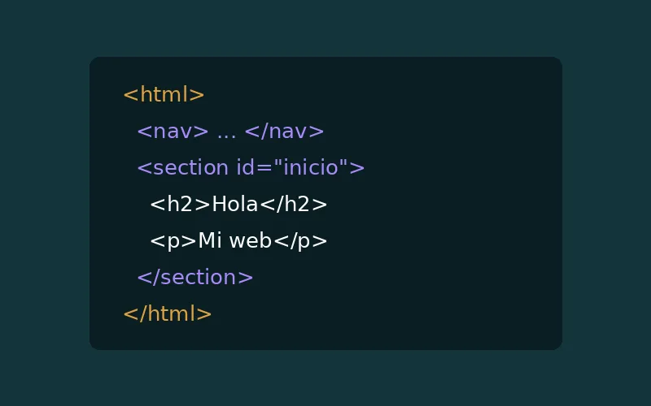
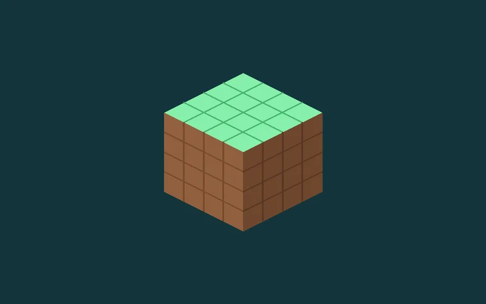

Software
Portafolio Web
Mi sitio personal diseñado para presentar mis datos, competencias e intereses académicos con HTML, CSS, Bootstrap y diseño adaptable.
Trabajos realizados en el colegio
Mi sitio personal diseñado para presentar mis datos, competencias e intereses académicos con HTML, CSS, Bootstrap y diseño adaptable.

Un sitio web sencillo enfocado en la estructuración de contenidos, navegación interna y organización semántica con etiquetas HTML.

Creación de figuras y elementos tridimensionales desarrollados en Blockbench con un estilo de bloques inspirado en Minecraft.